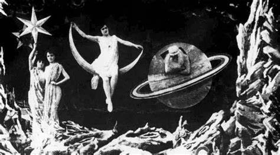
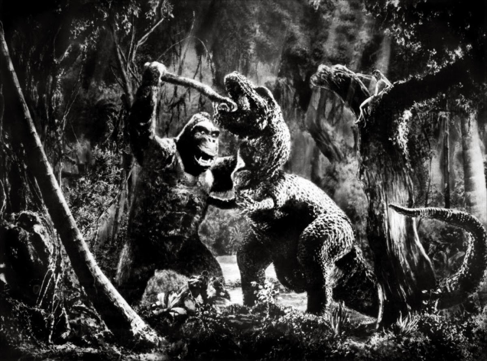
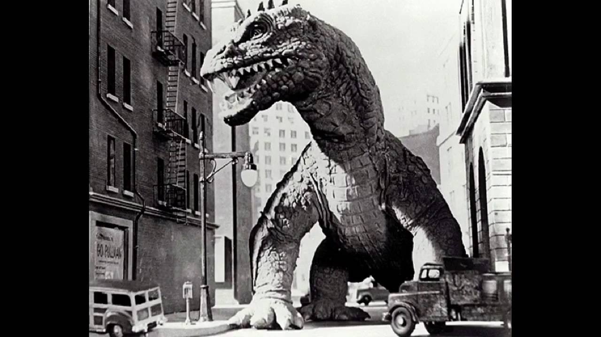
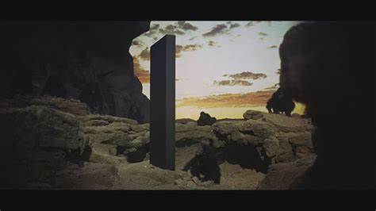
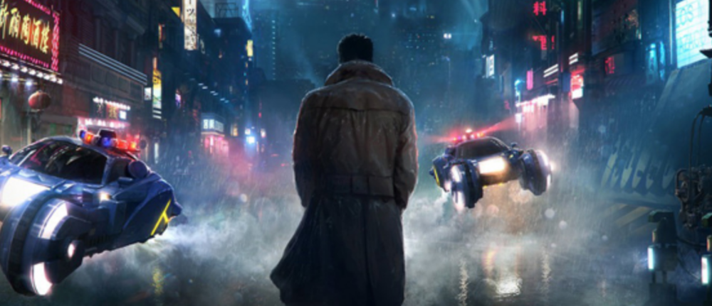
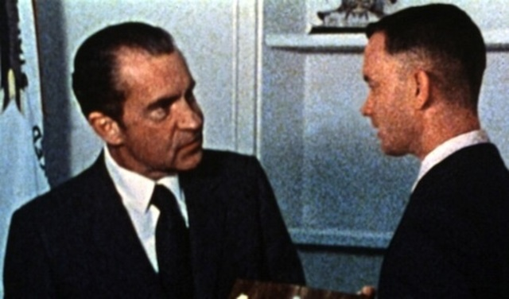
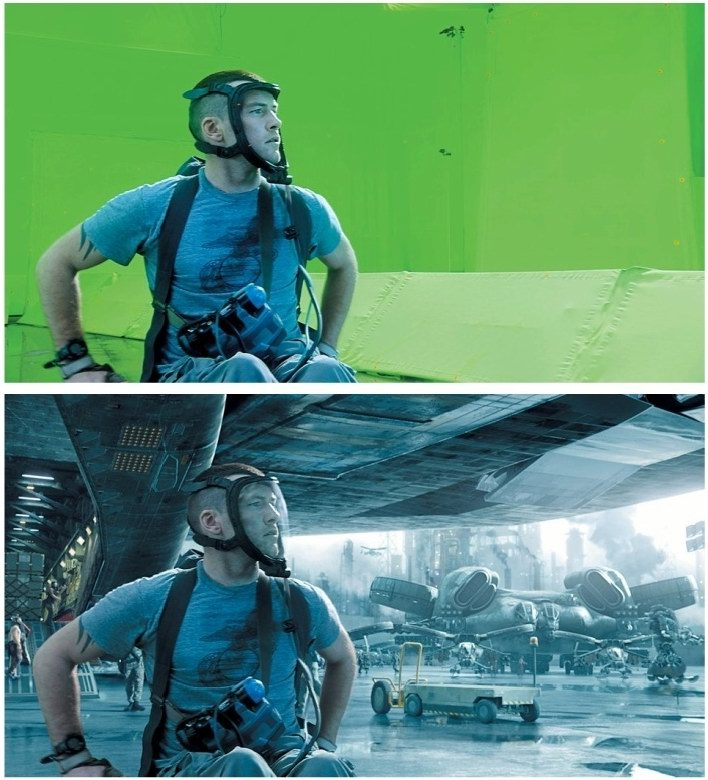
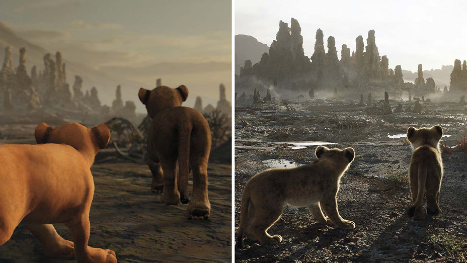

-
Principios de 1900: Las primeras técnicas de efectos visuales, como la animación stop-motion, se utilizan en películas mudas.

-
1930s: "King Kong" utiliza técnicas de stop-motion para crear efectos visuales. "La bella y la bestia" utiliza animación de cámara y técnicas de stop-motion para crear los efectos visuales de la bestia.

-
1950s: "El rey de los dinosaurios" utiliza animación de cámara y técnicas de stop-motion para crear los efectos visuales de los dinosaurios.

-
1960s: "2001: A Space Odyssey" utiliza modelos de nave espacial y animación de ordenador para crear efectos visuales.

-
1980s: "Blade Runner" utiliza modelos de ciudad y animación de ordenador para crear efectos visuales de un futuro distópico. "Terminator 2: Judgment Day" utiliza animación de ordenador y técnicas de captura de movimiento para crear efectos visuales del robot T-1000.

-
1990s: "Forrest Gump" utiliza técnicas de superposición y composición para insertar al personaje en eventos históricos reales. "The Matrix" utiliza técnicas de captura de movimiento y animación de ordenador para crear efectos visuales de "bullet time" y "cámara lenta" y se hace uso de la tecnología Motion Capture.

-
2000s: "Avatar" utiliza técnicas de captura de movimiento y animación de ordenador para crear efectos visuales de los personajes de la película. El uso de Motion Capture y la creación de personajes completamente generados por computadora se convierten en un estandar para los efectos visuales.

-
2010s: "Rise of the Planet of the Apes" utiliza técnicas de captura de movimiento y animación de ordenador para crear efectos visuales de los simios. Se comienza a utilizar la tecnología de deep learning para mejorar los efectos visuales y la generación de personajes.
-
2020s: Películas como "The Lion King" y "Gemini Man" utilizan técnicas de deep learning para crear personajes completamente generados por computadora que son indistinguibles de actores reales.
